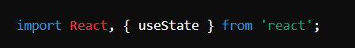
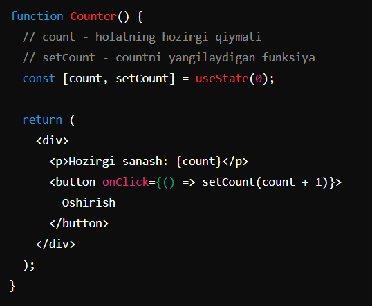
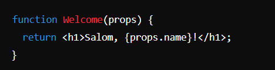
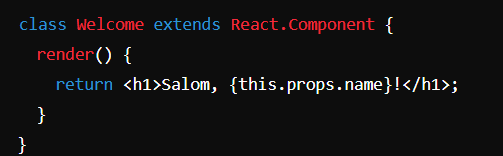

React
ReactJS - bu Facebook tomonidan ishlab chiqilgan va hozirda ochiq manbali loyiha sifatida saqlanadigan JavaScript kutubxonasi. ReactJS foydalanuvchi interfeyslarini (UI) yaratish uchun ishlatiladi, xususan, bir sahifali ilovalar (SPA - Single Page Applications) va mobil ilovalar uchun.

useState bu-...
bu React kutubxonasidagi asosiy xook (hook)lardan biridir. React - bu foydalanuvchi interfeysi (UI) komponentlarini yaratish uchun JavaScript kutubxonasi. useState xooki komponentning ichki holatini (state) saqlash va boshqarish imkonini beradi.
useState ishlatish uchun, avvalo, React kutubxonasidan import qilinadi: Keyin useState xooki foydalaniladi. Bu funksiya komponentning ichki holatini o'zgartiradigan ikkita qiymatni qaytaradi: birinchisi, holatning hozirgi qiymati; ikkinchisi, ushbu holatni o'zgartirish uchun foydalaniladigan funksiya.
Ushbu misolda, count boshlang'ich qiymati 0 bo'lgan holatni ifodalaydi. setCount esa count qiymatini yangilash uchun ishlatiladi. Har safar Oshirish tugmasi bosilganda, setCount chaqiriladi va count qiymati bittaga oshiriladi.
Component
React-da komponentlar foydalanuvchi interfeysini (UI) bo'laklarga ajratish va har bir bo'lakni alohida mustaqil qismlar sifatida ishlatish imkonini beradi. Komponentlar UI'ni tuzishning asosiy bloklari bo'lib, ular boshqa komponentlar bilan birgalikda katta va murakkab interfeyslarni boshqarishni osonlashtiradi.
Komponentlar turlari
Funksional komponentlar: Funksional komponentlar oddiy JavaScript funksiyalari bo'lib, ular props deb ataladigan parametrlar qabul qiladi va JSX (JavaScript XML) shaklida UI elementlarini qaytaradi. Bu komponentlar holat (state) yoki React xooklaridan foydalanishi mumkin
Sinflar (Class) komponentlar: Sinflar komponentlar React.Component sinfidan meros oladi va render metodini o'z ichiga oladi, u UI ni JSX formatida qaytaradi. Sinflar komponentlar o'z holatini (state) va hayotiy tsikl usullarini (lifecycle methods) boshqarishi mumkin, masalan componentDidMount, componentDidUpdate, va componentWillUnmount.
